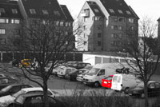

|
Click on the pictures to see them in larger size.
Editing in Photoshop can be quite effect full.
This was shot 2003-03-06, and
edited in Photoshop
This was shot 2003-03-14,
for the soul purpose of transforming it into the Black&White and yellow image it
became.
This was shot 2003-03-16,
for the soul purpose of transforming it into these colors. |